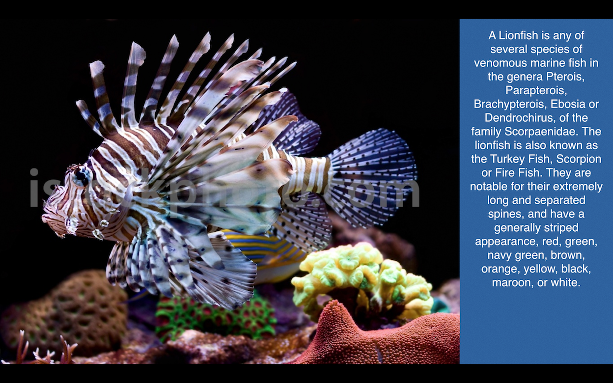
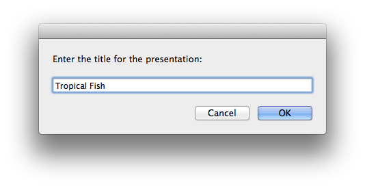
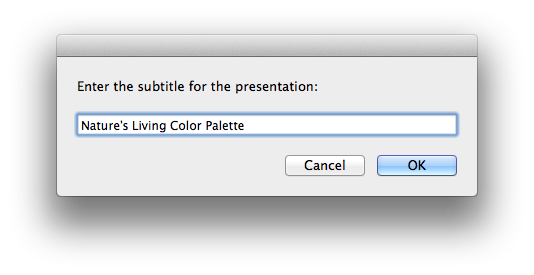
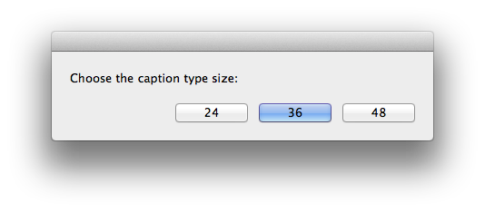
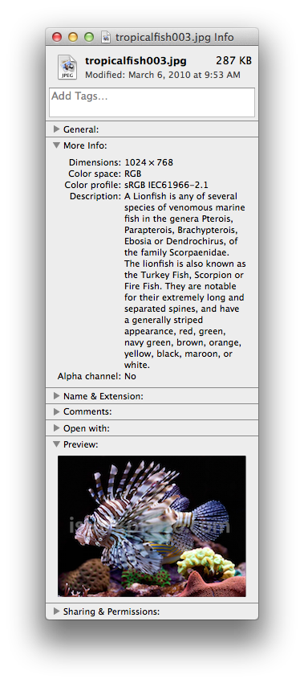

A very important aspect of automation is its ability to perform a defined series of actions in repetition. For example, say you want to create a “kiosk-style” Keynote presentation that displays photos and captions based upon a collection of image files, each embedded with metadata such as their author and description.
To create such a presentation would be very labor-intensive, as you would need to:
Create a new presentation layout, designing it to display the image one one side and the caption on the other side.
Extract the metadata for each image by either viewing the Finder information window for the file (see sidebar) and copying its displayed metadata, or opening the image file in an image editor application, and then viewing and copying the file info record for the image.
Create a slide for each image, importing the image and metadata for that image.
A very detailed process indeed, and one that’s ideal for automating.

(⬆ see above ) A widescreen presentation slide with the image centered in a 4x3 pane on the left, and the text from its embedded description tag displayed vertically on the right.
The following example script demonstrates the power of automation as it builds a Keynote document from a group of image files, as it generates a slide for each image file, scaling and positioning each photo next to the caption extracted from its embedded metadata tags.
Follow these steps:
DO THIS ►DOWNLOAD and unpack the ZIP archive containing the example images. Place the folder containing the images in your Pictures folder.
DO THIS ►Open the script below in the AppleScript Editor application, and then save and run the script.
DO THIS ►In the forthcoming file chooser dialog, navigate to and select the demo image files.
DO THIS ►In the next dialog, enter the title for the presentation (⬇ see below )

DO THIS ►Then, enter the sub-title for the presentation (⬇ see below )

DO THIS ►And finally, choose the type size to be used for the caption text (⬇ see below )

The presentation will be created and automatically begin playing. Watch the demo creation and playback: (⬇ see below )
Image File 16x9 Prezo with Left 4x3 Display and Caption Right
propertyplaceholderText : "Praesent commodo cursus magna, vel scelerisque nisl consectetur et. Donec ullamcorper nulla non metus auctor fringilla. Etiam porta sem malesuada magna mollis euismod. Nulla vitae elit libero, A pharetra augue. Vestibulum id ligula porta felis euismod semper."
The colorful images used in this example presentation can be found at ISTOCKPHOTO.COM.
FINDER INFO WINDOW
The Finder information window for an image file will display the values for some the metadata tags embedded in the image.

DISCLAIMER
THIS WEBSITE IS NOT HOSTED BY APPLE INC.
Mention of third-party websites and products is for informational purposes only and constitutes neither an endorsement nor a recommendation. MACOSXAUTOMATION.COM assumes no responsibility with regard to the selection, performance or use of information or products found at third-party websites. MACOSXAUTOMATION.COM provides this only as a convenience to our users. MACOSXAUTOMATION.COM has not tested the information found on these sites and makes no representations regarding its accuracy or reliability. There are risks inherent in the use of any information or products found on the Internet, and MACOSXAUTOMATION.COM assumes no responsibility in this regard. Please understand that a third-party site is independent from MACOSXAUTOMATION.COM and that MACOSXAUTOMATION.COM has no control over the content on that website. Please contact the vendor for additional information.